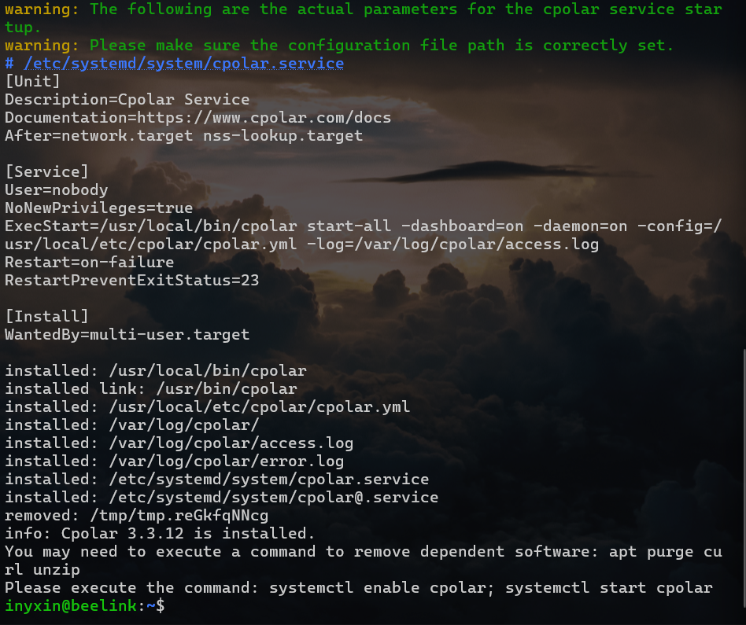
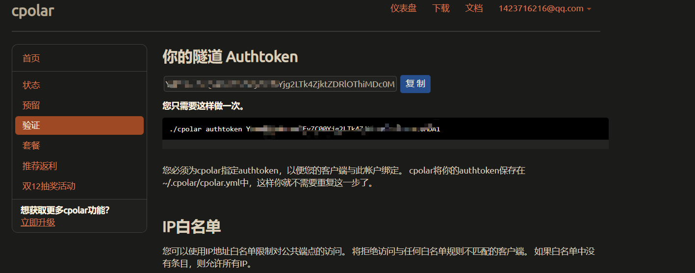

千里之行，始于足下。
cpolar - secure introspectable tunnels to localhost
优点: 不限流量 , 4 条隧道
缺点: CPU 占用高 , 随机 IP
安装
1
2
| curl -L https://www.cpolar.com/static/downloads/install-release-cpolar.sh | sudo bash
|

查看版本
1
2
| inyxin@beelink:~$ cpolar version
cpolar version 3.3.12
|
token 认证
登录 cpolar 官网后台，点击左侧的验证，查看自己的认证 token，之后将 token 贴在命令行里

1
2
| inyxin@beelink:~$ cpolar authtoken YWVmMDQ0NGEtMTEyZC00Yjg2LTk4ZjktZDRlOThi
Authtoken saved to configuration file: /usr/local/etc/cpolar/cpolar.yml
|
简单穿透测试一下
1
2
3
4
5
6
7
8
9
| cpolar 9998
cpolar by @bestexpresser (Ctrl+C to quit) Tunnel Status online
Account inyxin (Plan: Free)
Version 3.12/3.22
Web Interface 127.0.0.1:4040
Forwarding http:
Avg Conn Time 0.00ms
|
穿透成功 , 只是 IP 不固定